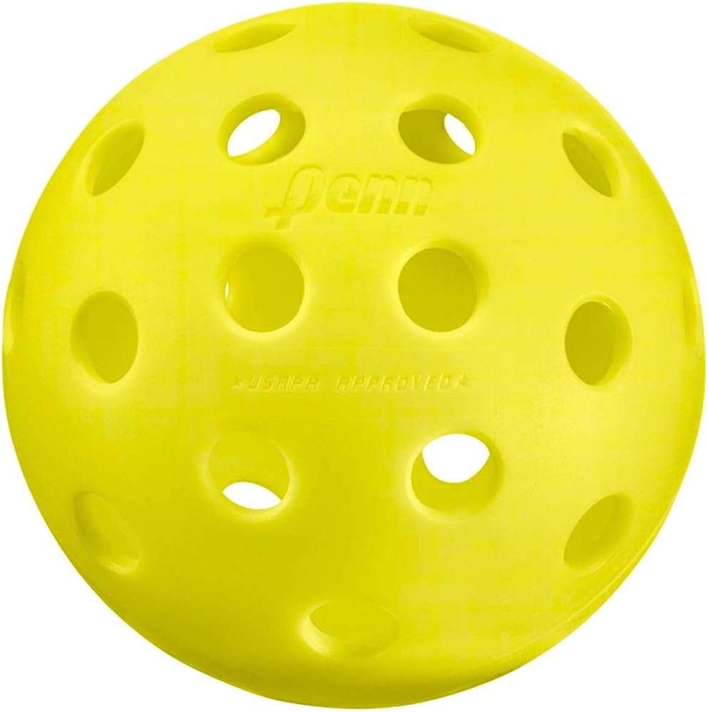
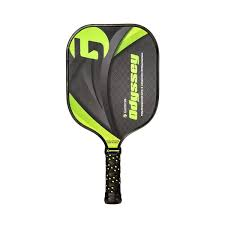
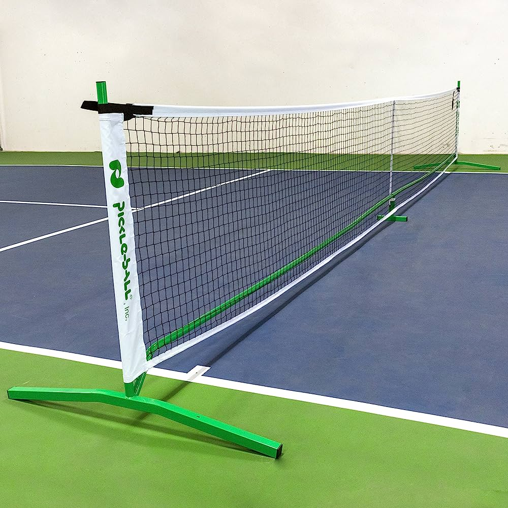
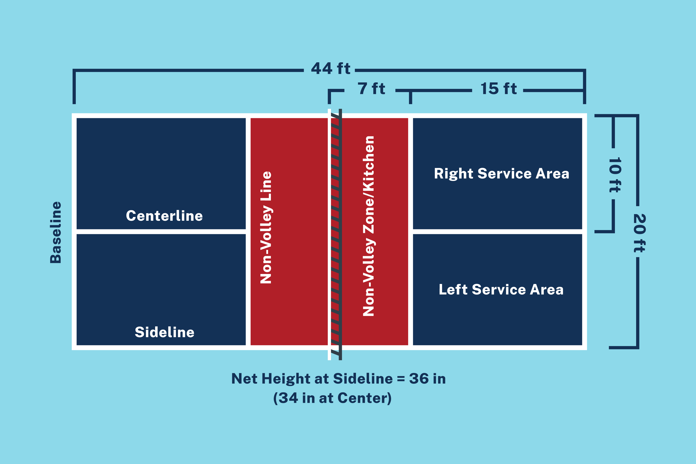

Pickleball is a relatively simple sport to learn, but it is important to know the rules of the game in order to play it correctly. Here are the basic rules of pickleball:
The game is played on a court that is 20x44 feet (6.1x13.4 meters).
The net is 36 inches (91.4 cm) high at the center and 34 inches (86.4 cm) high at the posts.
The ball must be served diagonally, and it must land in the opponent's court.
The ball can only be hit with the paddle one time before it must go over the net.
If the ball lands out of bounds or hits a non-playable area, it is a fault.
A point is scored when the opponent is unable to return the ball or hits the ball out of bounds. The first player or team to score 11 points and have a two-point lead wins the game.
For a complete set of rules and regulations, you can refer to the official rulebook of the USA Pickleball Association website.
Equipment Used in Pickleball
Equipment Required
Description
Ball
A perforated polymer ball similar to a wiffle ball, but slightly smaller and heavier.
Paddle
A paddle used to hit the ball, made of wood, composite, or graphite materials.
Net
A tennis-style net that separates the playing area and is hung at a height of 36 inches at the center.
Court
A rectangular playing area that measures 20 x 44 feet for doubles and 20 x 34 feet for singles.
 


Here is an image of a pickleball court! Image from the following link
Strategy for Pickleball
Pickleball is a fast-paced and dynamic sport, and a key part of the game is strategy. Here are a few tips and tricks to help you improve your pickleball game:
Work on your serve - A strong serve can give you an advantage in the game and help you put pressure on your opponent.
Be patient - Pickleball is a game of strategy, and it's important to wait for the right opportunity to make your move.
Communicate with your partner - Communication is key in pickleball, especially when playing doubles. Make sure you are communicating with your partner about where to place the ball and who will be responsible for certain shots.
Practice your footwork - Good footwork can help you get to the ball faster and make it easier to hit a shot accurately.
Know your opponent - Pay attention to your opponent's strengths and weaknesses, and adjust your strategy accordingly.
By practicing these tips and continuing to play the game, you will become a better pickleball player in no time!